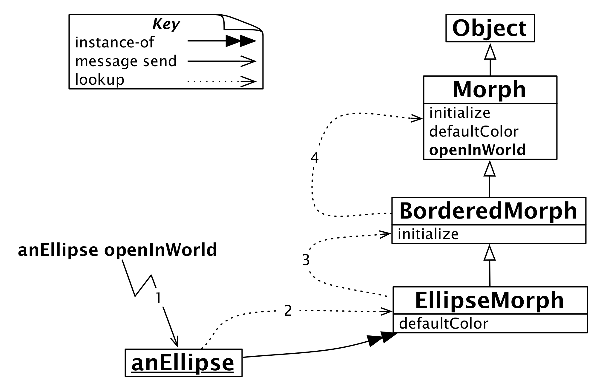
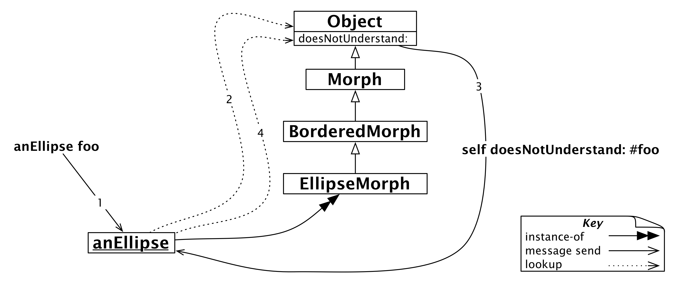
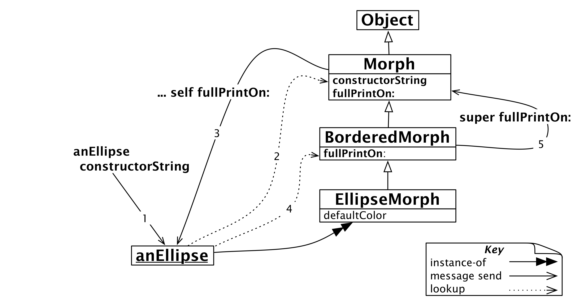
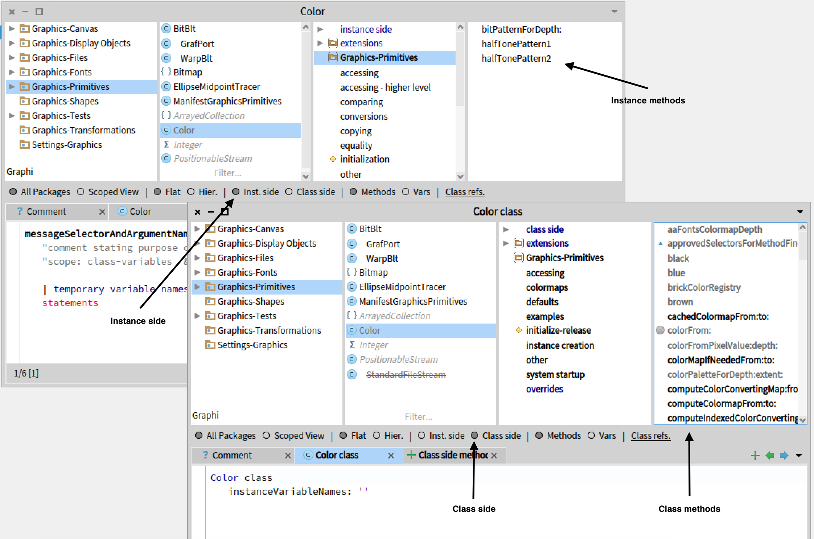
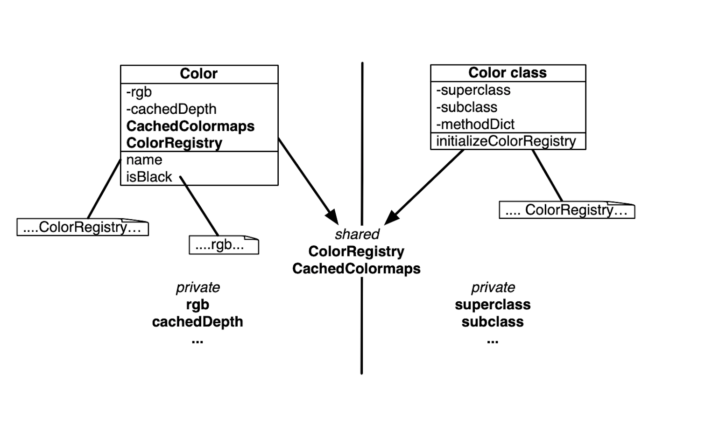

10 The Pharo object model
The Pharo language model is inspired by the one of Smalltalk. It is simple and uniform: everything is an object, and objects communicate only by sending messages to each other. Instance variables are private to the object and methods are all public and dynamically looked up (late-bound).
In this chapter, we present the core concepts of the Pharo object model. We sorted the sections of this chapter to make sure that the most important points appear first. We revisit concepts such as self, super and precisely define their semantics. Then we discuss the consequences of representing classes as objects. This will be extended in Chapter: 17.
10.1 The rules of the core model
The object model is based on a set of simple rules that are applied uniformly and systematically without any exception. The rules are as follows:
Rule 1 Everything is an object. Rule 2 Every object is an instance of a class. Rule 3 Every class has a superclass. Rule 4 Everything happens by sending messages. Rule 5 Method lookup follows the inheritance chain. Rule 6 Classes are objects too and follow exactly the same rules. Let us look at each of these rules in detail.
10.2 Everything is an Object
The mantra everything is an object is highly contagious. After only a short while working with Pharo, you will be surprised how this rule simplifies everything you do. Integers, for example, are objects too, so you send messages to them, just as you do to any other object.
3 + 4
>>> 7+ 4 to 3 yields the object 7.20 factorial
>>> 2432902008176640000factorial to 20 yields a large number.Listing 10.1 and 10.2 are two examples.
The object 7 is different than the object returned by 20 factorial. 7 is an instance of SmallInteger while 20 factorial is an instance of LargePositiveInteger. But because they are both polymorphic objects (they know how to answer to the same set of messages), none of the code, not even the implementation of factorial, needs to know about this.
Coming back to everything is an object rule, perhaps the most fundamental consequence of this rule is that classes are objects too. Classes are not second-class objects: they are really first-class objects that you can send messages to, inspect, and change as any object.
From the point of view of sending a message, there is no difference between an instance such as 7 and a class. The following example (in Listing 10.3) shows that we can send the message today to the class Date to obtain the current date of the system.
Date today printString
>>> '24 July 2021'today to class Date yields the current dateThe following Listing 10.4 shows that we can ask a class for the instance variable names its instances will have. Note that the message allInstVarNames returns the inherited instance variable names too.
Date allInstVarNames
>>> #(#start #duration)Date class.Classes are objects too. We interact the same way with classes and objects, simply by sending messages to them. ## Every object is an instance of a class very object has a class and you can find out which one by sending message classto it.example=true class >> SmallInteger`
20 factorial class
>>> LargePositiveInteger'hello' class
>>> ByteString(4@5) class
>>> PointObject new class
>>> ObjectA class defines the structure of its instances via instance variables, and the behavior of its instances via methods. Each method has a name, called its selector, which is unique within the class. Since classes are objects, and every object is an instance of a class, it follows that classes must also be instances of classes. A class whose instances are classes is called a metaclass. Whenever you create a class, the system automatically creates a metaclass for you. The metaclass defines the structure and behavior of the class that is its instance. You will not need to think about metaclasses 99% of the time, and may happily ignore them. We will have a closer look at metaclasses in Chapter 17.
10.3 Instance structure and behavior
Now we will briefly present how we specify the structure and behavior of instances.
Instance variables
Instance variables are accessed by name in any of the instance methods of the class that defines them, and also in the methods defined in its subclasses. This means that Pharo instance variables are similar to protected variables in C++ and Java. However, we prefer to say that they are private, because it is considered bad style in Pharo to access an instance variable directly from a subclass.
Instance-based encapsulation
Instance variables in Pharo are private to the instance itself. This is in contrast to Java and C++, which let instance variables (also known as fields or member variables) to be accessed by any other instance that happens to be of the same class. We say that the encapsulation boundary of objects in Java and C++ is the class, whereas in Pharo it is the instance.
In Pharo, two instances of the same class cannot access each other's instance variables unless the class defines accessor methods. There is no language syntax that provides direct access to the instance variables of any other object. Actually, a mechanism called reflection provides a way to ask another object for the values of its instance variables. Reflection is at the root of meta-programming which is used for writing tools like the object inspector.
Instance encapsulation example
The method distanceTo: of the class Point computes the distance between the receiver and another point (see Listing 10.5). The instance variables x and y of the receiver are accessed directly by the method body. However, the instance variables of the other point must be accessed by sending it the messages x and y.
Point >> distanceTo: aPoint
"Answer the distance between aPoint and the receiver."
| dx dy |
dx := aPoint x - x.
dy := aPoint y - y.
^ ((dx * dx) + (dy * dy)) sqrt1@1 dist: 4@5
>>> 5.0The key reason to prefer instance-based encapsulation to class-based encapsulation is that it enables different implementations of the same abstraction to coexist. For example, the method distanceTo: doesn't need to know or care whether the argument aPoint is an instance of the same class as the receiver.
The argument object might be represented in polar coordinates, or as a record in a database, or on another computer in a distributed system. As long as it can respond to the messages x and y, the code of method distanceTo: (see Listing 10.5) will still work.
Methods
All methods are public and virtual (i.e., dynamically looked up). There is no static methods in Pharo. Methods can access all instance variables of the object. Some developers prefer to access instance variables only through accessors. This practice has some value, but it also clutters the interface of your classes, and worse, exposes its private state to the world.
To ease class browsing, methods are grouped into protocols that indicate their intent. Protocols have no semantics from the language view point. They are just folders in which methods are stored. Some common protocol names have been established by convention, for example, accessing for all accessor methods and initialization for establishing a consistent initial state for the object.
The protocol private is sometimes used to group methods that should not be relied on. Nothing, however, prevents you from sending a message that is implemented by such a "private" method. However, it means that the developer may change or remove such private method.
10.4 Every class has a superclass
Each class in Pharo inherits its behaviour and the description of its structure from a single superclass. This means that Pharo offers single inheritance. Here are some examples showing how can we navigate the hierarchy.
SmallInteger superclass
>>> IntegerInteger superclass
>>> NumberNumber superclass
>>> MagnitudeMagnitude superclass
>>> ObjectObject superclass
>>> ProtoObjectProtoObject superclass
>>> nilTraditionally the root of the inheritance hierarchy is the class Object, since everything is an object. Most classes inherit from Object, which defines many additional messages that almost all objects understand and respond to.
In Pharo, the root of the inheritance tree is actually the class ProtoObject, but you will normally not pay any attention to this class.
The class ProtoObject encapsulates the minimal set of messages that all objects must have and ProtoObject is designed to raise as many as possible errors (to support proxy definition).
Unless you have a very good reason to do otherwise, when creating application classes you should normally subclass Object, or one of its subclasses.
A new class is normally created by sending the message subclass: instanceVariableNames: ... to an existing class as shown in 10.6. There are a few other methods to create classes. To see what they are, have a look at Class and its subclass creation protocol.
Object subclass: #Point
instanceVariableNames: 'x y'
classVariableNames: ''
package: 'Kernel-BasicObjects'Point.10.5 Everything happens by sending messages
This rule captures the essence of programming in Pharo. In procedural programming (and in some static features of some object-oriented languages such as Java), the choice of which method to execute when a procedure is called is made by the caller. The caller chooses the procedure to execute statically, by name. In such a case there is no lookup or dynamicity involved. In Pharo when we send a message, the caller does not decide which method will be executed. Instead, we tell an object to do something by sending it a message. A message is nothing but a name and a list of arguments. The receiver then decides how to respond by selecting its own method for doing what was asked. Since different objects may have different methods for responding to the same message, the method must be chosen dynamically, when the message is received.
As a consequence, we can send the same message to different objects, each of which may have its own method for responding to the message.
In the examples shown in Listing 10.7 and 10.8, we do not decide how the SmallInteger 3 or the Point (1@2) should respond to the message + 4. We let the objet decide: Each has its own method for +, and responds to + 4 accordingly.
3 + 4
>>> 7+ with argument 4 to integer 3.(1@2) + 4
>>> 5@6Vocabulary point
In Pharo, we do not say that we "invoke methods". Instead, we send messages. This is just a vocabulary point but it is significant. It implies that this is not the responsibility of the client to select the method to be executed, it is the one of the receiver of the message.
About other computation
Nearly everything in Pharo happens by sending messages.
At some point action must take place:
- Variable declarations are not message sends. In fact, variable declarations are not even executable. Declaring a variable just causes space to be allocated for an object reference.
- Variable accesses are just accesses to the value of a variable.
- Assignments are not message sends. An assignment to a variable causes that variable name to be freshly bound to the result of the expression in the scope of its definition.
- Returns are not message sends. A return simply causes the computed result to be returned to the sender.
- Primitives are not message sends. They are implemented in the virtual machine.
- Pragmas are not message sends. They are method annotations.
Other than these few exceptions, pretty much everything else does truly happen by sending messages.
About object-oriented programming.
One of the consequences of Pharo's model of message sending is that it encourages a style in which objects tend to have very small methods and delegate tasks to other objects, rather than implementing huge, procedural methods that assume too much responsibility. Joseph Pelrine expresses this principle succinctly as follows:
Don't do anything that you can push off onto someone else. any object-oriented languages provide both static and dynamic operations for objects. In Pharo there are only dynamic message sends. For example, instead of providing static class operations, we simply send messages to classes (which are simply objects). n particular, since there are no public fields in Pharo, the only way to update an instance variable of another object is to send it a message asking that it update its own field. Of course, providing setter and getter methods for all the instance variables of an object is not good object-oriented style, because clients can access to the internal state of objects. oseph Pelrine also states this very nicely: !note Don't let anyone else play with your data.
10.6 Sending a message: a two-step process
What exactly happens when an object receives a message? This is a two-step process: method lookup and method execution.
- Lookup. First, the method having the same name as the message is looked up.
- Method Execution. Second, the found method is applied to the receiver with the message arguments: When the method is found, the arguments are bound to the parameters of the method, and the virtual machine executes it.
The lookup process is quite simple:
- The class of the receiver looks up the method to use to handle the message.
- If this class does not have that method defined, it asks its superclass, and so on, up the inheritance chain.
It is essentially as simple as that.
Nevertheless there are a few questions that need some care to answer:
- What happens when a method does not explicitly return a value?
- What happens when a class reimplements a superclass method?
- What is the difference between
selfandsupersends? - What happens when no method is found?
The rules for method lookup that we present here are conceptual; virtual machine implementors use all kinds of tricks and optimizations to speed up method lookup. First let us look at the basic lookup strategy, and then consider these further questions.
10.7 Method lookup follows the inheritance chain
Suppose we create an instance of EllipseMorph.
anEllipse := EllipseMorph new.If we send the message defaultColor to this object now, we get the result Color yellow.
anEllipse defaultColor
>>> Color yellowThe class EllipseMorph implements defaultColor (See Listing 10.9), so the appropriate method is found immediately.
EllipseMorph >> defaultColor
"Answer the default color/fill style for the receiver"
^ Color yellowIn contrast, if we send the message openInWorld to anEllipse, the method is not immediately found, since the class EllipseMorph does not implement openInWorld. The search therefore continues in the superclass, BorderedMorph, and so on, until an openInWorld method is found in the class Morph (see Listing 10.10 and Figure 10.1).
Morph >> openInWorld
"Add this morph to the world."
self openInWorld: self currentWorld
10.8 Method execution
We mentioned that sending a message is a two-step process:
- Lookup. First, the method having the same name as the message is looked up.
- Method Execution. Second, the found method is applied to the receiver with the message arguments: When the method is found, the arguments are bound to the parameters of the method, and the virtual machine executes it.
Now we explain the second point: the method execution.
When the lookup returns a method, the receiver of the message is bound to self, and the arguments of the message to the method parameters. Then the system executes the method body. This is true wherever the method that should be executed is found. Imagine that we send the message EllipseMorph new closestPointTo: 100@100 and that the method is defined as in Listing 10.11.
EllipseMorph >> closestPointTo: aPoint
^ self intersectionWithLineSegmentFromCenterTo: aPointThe variable self will point to the new ellipse we created and aPoint will refer to the point 100@100.
Now exactly the same process will happen and this even if the method found by the method lookup finds the method in a superclass.
When we send the message EllipseMorph new openInWorld.
The method openInWorld is found in the Morph class.
Still the variable self is bound to the newly created ellipse.
This is why we say that self always represents the receiver of the message and this independently of the class in which the method was found.
This is why there are two different steps during a message send: looking up the method within the class hierarchy of the message receiver and the method execution on the message receiver.
10.9 Message not understood
What happens if the method we are looking for is not found?
Suppose we send the message foo to our ellipse. First the normal method lookup will go through the inheritance chain all the way up to Object (or rather ProtoObject) looking for this method. When this method is not found, the virtual machine will cause the object to send self doesNotUnderstand: #foo (See Figure 10.2).
foo is not understood.
Now, this is a perfectly ordinary, dynamic message send, so the lookup starts again from the class EllipseMorph, but this time searching for the method doesNotUnderstand:. As it turns out, Object implements doesNotUnderstand:. This method will create a new MessageNotUnderstood object which is capable of starting a Debugger in the current execution context.
Why do we take this convoluted path to handle such an obvious error?
Well, this offers developers an easy way to intercept such errors and take alternative action. One could easily override the method Object>>doesNotUnderstand: in any subclass of Object and provide a different way of handling the error.
In fact, this can be an easy way to implement automatic delegation of messages from one object to another. A delegating object could simply delegate all messages it does not understand to another object whose responsibility it is to handle them, or raise an error itself!
10.10 About returning self
Notice that the method defaultColor of the class EllipseMorph explicitly returns Color yellow (see Listing 10.9), whereas the method openInWorld of Morph does not appear to return anything (see Listing 10.10).
Actually a method always answers a message with a value (which is, of course, an object). The answer may be defined by the ^ construct in the method, but if execution reaches the end of the method without executing a ^, the method still answers a value -- it answers the object that received the message. We usually say that the method answers self, because in Pharo the pseudo-variable self represents the receiver of the message, much like the keyword this in Java. Other languages, such as Ruby, by default return the value of the last statement in the method. Again, this is not the case in Pharo, instead you can imagine that a method without an explicit return ends with ^ self.
selfalways represents the receiver of the message. his suggests thatopenInWorldas defined in Listing 10.10 is equivalent to the hypothical methodopenInWorldReturnSelfdefined in Listing 10.12.
Morph >> openInWorldReturnSelf
"Add this morph to the world."
self openInWorld: self currentWorld
^ selfself.Why is explicitly writing ^ self not a so good thing to do?
When you return something explicitly, you are communicating that you are returning something of interest to the sender. When you explicitly return self, you are saying that you expect the sender to use the returned value. This is not the case here, so it is best not to explicitly return self. We only return self on special case to stress that the receiver is returned.
This is a common idiom in Pharo, which Kent Beck refers to as Interesting return value: "Return a value only when you intend for the sender to use the value."
By default (if not specified differently) a method returns the message receiver.
10.11 Overriding and extension
If we look again at the EllipseMorph class hierarchy in Figure 10.1, we see that the classes Morph and EllipseMorph both implement defaultColor. In fact, if we open a new morph (Morph new openInWorld) we see that we get a blue morph, whereas an ellipse will be yellow by default.
We say that EllipseMorph overrides the defaultColor method that it inherits from Morph.
The inherited method no longer exists from the point of view of anEllipse.
Sometimes we do not want to override inherited methods, but rather extend them with some new functionality, that is, we would like to be able to invoke the overridden method in addition to the new functionality we are defining in the subclass. In Pharo, as in many object-oriented languages that support single inheritance, this can be done with the help of super sends.
A frequent application of this mechanism is in the initialize method. Whenever a new instance of a class is initialized, it is critical to also initialize any inherited instance variables. However, the knowledge of how to do this is already captured in the initialize methods of each of the superclass in the inheritance chain. The subclass has no business even trying to initialize inherited instance variables!
It is therefore good practice whenever implementing an initialize method to send super initialize before performing any further initialization as shown in Listing 10.13.
BorderedMorph >> initialize
"Initialize the state of the receiver"
super initialize.
self borderInitializeWe need super sends to compose inherited behaviour that would otherwise be overridden.
It is a good practice that aninitializemethod starts by sendingsuper initialize.
10.12 Self and super sends
self represents the receiver of the message and the lookup of the method starts in the class of the receiver. Now what is super? super is not the superclass! It is a common and natural mistake to think this. It is also a mistake to think that lookup starts in the superclass of the class of the receiver.
self represents the receiver of the message and the method lookup starts in the class of the receiver.How do self sends differ from super sends?
Like self, super represents the receiver of the message. Yes you read it well! The only thing that changes is the method lookup. Instead of lookup starting in the class of the receiver, it starts in the superclass of the class of the method where the super send occurs.
superrepresents the receiver of the message and the method lookup starts in the superclass of the class of the method where thesupersend occurs. e shall see in the following example precisely how this works. magine that we define the following three methods:Morph>>fullPrintOn:,Morph >> constructorString, andBorderedMorph >> fullPrintOn:
First in Listing 10.14, we define the method fullPrintOn: on class Morph that just adds to the stream the name of the class followed by the string ' new' - the idea is that we could execute the resulting string and get back an instance similar to the receiver.
Morph >> fullPrintOn: aStream
aStream nextPutAll: self class name, ' new'self send.Second we define the method constructorString that sends the message fullPrintOn: (see Listing 10.15).
Morph >> constructorString
^ String streamContents: [ :s | self fullPrintOn: s ].self send.Finally, we define the method fullPrintOn: on the class BorderedMorph
superclass of EllipseMorph. This new method extends the superclass behavior:
it invokes it and adds extra behavior (see Listing 10.16).
BorderedMorph >> fullPrintOn: aStream
aStream nextPutAll: '('.
super fullPrintOn: aStream.
aStream
nextPutAll: ') setBorderWidth: ';
print: borderWidth;
nextPutAll: ' borderColor: ', (self colorString: borderColor)super and self sends.Consider the message constructorString sent to an instance of EllipseMorph:
EllipseMorph new constructorString
>>> (EllipseMorph new) setBorderWidth: 1 borderColor: Color black'How exactly is this result obtained through a combination of self and
super sends?
First, anEllipse constructorString will cause the method constructorString to be found in the class Morph, as shown in Figure 10.3.
self and super sends.
The method constructorString of Morph performs a self send of fullPrintOn:.
The method fullPrintOn: is looked up starting in the class EllipseMorph, and the method fullPrintOn: BorderedMorph is found in BorderedMorph (see Figure 10.3).
What is critical to notice is that the self send causes the method lookup to start again in the class of the receiver, namely the class of anEllipse.
At this point, the method fullPrintOn: of BorderedMorph does a super send to extend the fullPrintOn: behavior it inherits from its superclass.
Because this is a super send, the lookup now starts in the superclass of the class where the super send occurs, namely in Morph. We then immediately find and execute the method fullPrintOn: of the class Morph.
10.13 Stepping back
A self send is dynamic in the sense that by looking at the method containing it, we cannot predict which method will be executed. Indeed an instance of a subclass may receive the message containing the self expression and redefine the method in that subclass. Here EllipseMorph could redefine the method fullPrintOn: and this method would be executed by method constructorString. Note that by only looking at the method constructorString, we cannot predict which fullPrintOn: method (either the one of EllipseMorph, BorderedMorph, or Morph) will be executed when executing the method constructorString, since it depends on the receiver the constructorString message.
Aselfsend triggers a method lookup starting in the class of the receiver. Aselfsend is dynamic in the sense that by looking at the method containing it, we cannot predict which method will be executed.
Note that the super lookup did not start in the superclass of the receiver.
This would have caused lookup to start from BorderedMorph, resulting in an infinite loop!
If you think carefully about super send and Figure 10.3, you will realize that super bindings are static: all that matters is the class in which the text of the super send is found. By contrast, the meaning of self is dynamic: it always represents the receiver of the currently executing message. This means that all messages sent to self are looked up by starting in the receiver's class.
Asupersend triggers a method lookup starting in the superclass of the class of the method performing thesupersend. We say that super sends are static because just looking at the method we know the class where the lookup should start (the class above the class containing the method).
10.14 The instance and class sides
Since classes are objects, they have their own instance variables and their own methods. We call these class instance variables and class methods, but they are really no different from ordinary instance variables and methods: They simply operate on different objects (classes in this case). An instance variable describes instance state and a method describes instance behavior. Similarly, class instance variables are just instance variables defined by a metaclass:
- Class instance variables describe the state of classes. An example is the superclass instance variable that describes the superclass of a given class.
- Class methods are just methods defined by a metaclass and that will be executed on classes. Sending the message
nowto the classTimeis defined on the (meta)classTime class. This method is executed with the classTimeas receiver.
A class and its metaclass are two separate classes, even though the former is an instance of the latter. However, this is largely irrelevant to you as a programmer: you are concerned with defining the behavior of your objects and the classes that create them.

- By default, when you select a class in the browser, you're browsing the instance side i.e., the methods that are executed when messages are sent to an instance of
Color. - Clicking on the Class side button switches you over to the class side: the methods that will be executed when messages are sent to the class
Coloritself.
For example, Color paleBlue sends the message paleBlue to the class Color (see Listing 10.17). You will therefore find the method paleBlue defined on the class side of Color, not on the instance side.
Color paleBlue
>>> Color paleBlue
"Color instances are self-evaluating"blue (defined on the class-side).Note that the class Color also defines an instance side method blue to access the blue component of a color. So you can send the message blue to the Color instance returned by the expression Color paleBlue as in Listing 10.18.
Color paleBlue blue
>>> 0.9951124144672532blue (defined on the instance-side).Metaclass creation
You define a class by filling in the template proposed on the instance side. When you compile this template, the system creates not just the class that you defined, but also the corresponding metaclass (which you can then edit by clicking on the Class side button). The only part of the metaclass creation template that makes sense for you to edit directly is the list of the metaclass's instance variable names. Once a class has been created, browsing its instance side lets you edit and browse the methods that will be possessed by instances of that class (and of its subclasses).
10.15 Class methods
Class methods can be quite useful, you can browse Color class for some good examples: You will see that there are two kinds of methods defined on a class: instance creation methods, like the class method blue in the class Color class, and those that perform a utility function, like Color class>>wheel:. This is typical, although you will occasionally find class methods used in other ways.
It is convenient to place utility methods on the class side because they can be executed without having to create any additional objects first. Indeed, many of them will contain a comment designed to make it easy to execute them.
Browse method Color class>>wheel:, double-click just at the beginning of the comment "(Color wheel: 12) inspect" and press CMD-d. You will see the effect of executing this method.
For those familiar with Java and C++, class methods may seem similar to static methods. However, the uniformity of the Pharo object model (where classes are just regular objects) means that they are somewhat different: Whereas Java static methods are really just statically-resolved procedures, Pharo class methods are dynamically-dispatched methods. This means that inheritance, overriding and super-sends work for class methods in Pharo, whereas they don't work for static methods in Java.
10.16 Class instance variables
With ordinary instance variables, all the instances of a class have the same set of variables (though each instance has its own private set of values), and the instances of its subclasses inherit those variables.
The story is exactly the same with class instance variables: a class is an object instance of another class. Therefore the class instance variables are defined on such classes and each class has its own private values for the class instance variables.
Instance variables also work. Class instance variables are inherited: A subclass will inherit those class instance variables, but a subclass will have its own private copies of those variables. Just as objects don't share instance variables, neither do classes and their subclasses share class instance variables.
For example, you could use a class instance variable called count to keep track of how many instances you create of a given class. However, any subclass would have its own count variable, so subclass instances would be counted separately. The following section presents an example.
10.17 Example: Class instance variables and subclasses
Suppose we define the class Dog, and its subclass Hyena. Suppose that we add a count class instance variable to the class Dog (i.e., we define it on the metaclass Dog class). Hyena will naturally inherit the class instance variable count from Dog.
Object subclass: #Dog
instanceVariableNames: ''
classVariableNames: ''
package: 'Example'Dog class
instanceVariableNames: 'count'Dog subclass: #Hyena
instanceVariableNames: ''
classVariableNames: ''
package: 'Example'Now suppose we define class methods for Dog to initialize its count to 0, and to increment it when new instances are created:
Dog class >> initialize
count := 0.Dog class >> new
count := count +1.
^ super newDog class >> count
^ countNow when we create a new Dog, the count value of the class Dog is incremented, and so is that of the class Hyena (but the hyenas are counted separately).
About class initialize
When you instantiate an object such as Dog new, initialize is called automatically as part of the new message send (you can see for yourself by browsing the method new in the class Behavior). But with classes, simply defining them does not automatically call initialize because it is not clear to the system if a class is fully working. So we have to call initialize explicitly here.
By default class initialize methods are automatically executed only when classes are loaded. See also the discussion about lazy initialization, below.
Dog initialize.
Hyena initialize.
Dog count
>>> 0Hyena count
>>> 0| aDog |
aDog := Dog new.
Dog count
>>> 1 "Incremented"Hyena count
>>> 0 "Still the same"10.18 Stepping back
Class instance variables are private to a class in exactly the same way that instance variables are private to an instance. Since classes and their instances are different objects, this has the following consequences:
1. A class does not have access to the instance variables of its own instances. So, the class Color does not have access to the variables of an object instantiated from it, aColorRed. In other words, just because a class was used to create an instance (using new or a helper instance creation method like Color red), it doesn't give the class any special direct access to that instance's variables. The class instead has to go through the accessor methods (a public interface) just like any other object.
2. The reverse is also true: an instance of a class does not have access to the class instance variables of its class. In our example above, aDog (an individual instance) does not have direct access to the count variable of the Dog class (except, again, through an accessor method).
A class does not have access to the instance variables of its own instances. An instance of a class does not have access to the class instance variables of its class. or this reason, instance initialization methods must always be defined on the instance side, the class side has no access to instance variables, and so cannot initialize them! All that the class can do is to send initialization messages, using accessors, to newly created instances. ava has nothing equivalent to class instance variables. Java and C++ static variables are more like Pharo class variables (discussed in Section 10.22), since in those languages all of the subclasses and ll of their instances share the same static variable.
10.19 Example: Defining a Singleton
Singleton is the most misunderstood design pattern. When wrongly applied, it favors procedural style promoting single global access. However, the Singleton pattern provides a typical example of the use of class instance variables and class methods.
Imagine that we would like to implement a class WebServer, and to use the Singleton pattern to ensure that it has only one instance.
First, we define the class WebServer as follows:
Object subclass: #WebServer
instanceVariableNames: 'sessions'
classVariableNames: ''
package: 'Web'Then, clicking on the Class side button, we add the (class) instance variable uniqueInstance.
WebServer class
instanceVariableNames: 'uniqueInstance'As a result, the class WebServer class will have a new instance variable (in addition to the variables that it inherits from Behavior, such as superclass and methodDict). It means that the value of this extra instance variable will describe the instance of the class WebServer class i.e., the class WebServer. The following code snippets show you the difference between the variables of the class Object and the class WebServer.
Object class allInstVarNames
>>> #(#superclass #methodDict #format #layout #organization
#subclasses #name #classPool #sharedPools #environment #category)WebServer class allInstVarNames
>>> #(#superclass #methodDict #format #layout #organization
#subclasses #name #classPool #sharedPools #environment #category #uniqueInstance)We can now define a class method named uniqueInstance.
WebServer class >> uniqueInstance
uniqueInstance ifNil: [ uniqueInstance := self new ].
^ uniqueInstanceThis method first checks whether uniqueInstance has been initialized. If it has not, the method creates an instance and assigns it to the class instance variable uniqueInstance. Finally the value of uniqueInstance is returned.
Since uniqueInstance is a class instance variable, this method can directly access it.
The first time that WebServer uniqueInstance is executed, an instance of the class WebServer will be created and assigned to the uniqueInstance variable. The next time, the previously created instance will be returned instead of creating a new one. (This pattern, checking if a variable is nil in an accessor method, and initializing its value if it is nil, is called lazy initialization).
Note that the instance creation code in the code above. Script 10.26 is written as self new and not as WebServer new. What is the difference? Since the uniqueInstance method is defined in WebServer class, you might think that there is no difference. And indeed, until someone creates a subclass of WebServer, they are the same. But suppose that ReliableWebServer is a subclass of WebServer, and inherits the uniqueInstance method. We would clearly expect ReliableWebServer uniqueInstance to answer a ReliableWebServer.
Using self ensures that this will happen, since self will be bound to the respective receiver, here the classes WebServer and ReliableWebServer. Note also that WebServer and ReliableWebServer will each have a different value for their uniqueInstance instance variable.
10.20 A note on lazy initialization
The setting of initial values for instances of objects generally belongs in the initialize method.
Putting initialization calls only in initialize helps from a readability perspective -- you don't have to hunt through all the accessor methods to see what the initial values are. Although it may be tempting to instead initialize instance variables in their respective accessor methods (using ifNil:
checks), avoid this unless you have a good reason.
Do not over-use the lazy initialization pattern.
For example, in our uniqueInstance method above, we used lazy initialization because users won't typically expect to call WebServer initialize. Instead, they expect the class to be "ready" to return new unique instances. Because of this, lazy initialization makes sense. Similarly, if a variable is expensive to initialize (opening a database connection or a network socket, for example), you will sometimes choose to delay that initialization until you actually need it.
10.21 Shared variables
Now we will look at an aspect of Pharo that is not so easily covered by our rules: shared variables. Pharo provides three kinds of shared variables: 1. Globally shared variables. 2. Class variables: variables shared between instances and classes. (Not to be confused with class instance variables, discussed earlier). 3. Pool variables: variables shared amongst a group of classes, The names of all of these shared variables start with a capital letter, to warn us that they are indeed shared between multiple objects.
Global variables
In Pharo, all global variables are stored in a namespace called Smalltalk globals, which is implemented as an instance of the class SystemDictionary. Global variables are accessible everywhere. Every class is named by a global variable. In addition, a few globals are used to name special or commonly useful objects.
The variable Processor refers to an instance of ProcessorScheduler, the main process scheduler of Pharo.
Processor class
>>> ProcessorSchedulerOther useful global variables
Smalltalk is the instance of SmalltalkImage. It contains many functionality to manage the system. In particular it holds a reference to the main namespace Smalltalk globals. This namespace includes Smalltalk itself since it is a global variable. The keys to this namespace are the symbols that name the global objects in Pharo code. So, for example:
Smalltalk globals at: #Boolean
>>> BooleanSince Smalltalk is itself a global variable:
Smalltalk globals at: #Smalltalk
>>> Smalltalk(Smalltalk globals at: #Smalltalk) == Smalltalk
>>> trueWorld is an instance of PasteUpMorph that represents the screen. World bounds answers a rectangle that defines the whole screen space; all Morphs on the screen are submorphs of World.
Undeclared is another dictionary, which contains all the undeclared variables.
If you write a method that references an undeclared variable starting with an uppercase, the browser will normally prompt you to declare it, for example as a global, class or class variable. However, if you later delete the declaration, the code will then reference an undeclared variable. Inspecting Undeclared can sometimes help explain strange behavior!
Using globals in your code
The recommended practice is to strictly limit the use of global variables. It is
usually better to use class instance variables or class variables and to provide class methods to access them. Indeed, if Pharo were to be implemented from scratch today, most of the global variables that are not classes would be replaced by singletons or others.
The usual way to define a global is just to perform Do it on an assignment to a capitalized but undeclared identifier. The parser will then offer to declare the global for you. If you want to define a global programmatically, just execute Smalltalk globals at: #AGlobalName put: nil. To remove it, execute Smalltalk globals removeKey: #AGlobalName.
10.22 Class variables: Shared variables
Sometimes we need to share some data amongst all the instances of a class and the class itself. This is possible using class variables. The term class variable indicates that the lifetime of the variable is the same as that of the class. However, what the term does not convey is that these variables are shared amongst all the instances of a class as well as the class itself, as shown in Figure 10.5.
Indeed, a better name would have been shared variables since this expresses more clearly their role, and also warns of the danger of using them, particularly if they are modified.

In Figure 10.5 we see that rgb and cachedDepth are
instance variables of Color, hence only accessible to instances of Color.
We also see that superclass, subclass, methodDict and so on are class instance variables, i.e., instance variables only accessible to the Color class.
But we can also see something new: ColorRegistry and CachedColormaps are
class variables defined for Color. The capitalization of these variables
gives us a hint that they are shared. In fact, not only may all instances of
Color access these shared variables, but also the Color class itself,
and any of its subclasses. Both instance methods and class methods can
access these shared variables.
A class variable is declared in the class definition template. For example, the
class Color defines a large number of class variables to speed up color
creation; its definition is show in the Script 10.27.
Object subclass: #Color
instanceVariableNames: 'rgb cachedDepth cachedBitPattern alpha'
classVariableNames: 'BlueShift CachedColormaps ColorRegistry ComponentMask ComponentMax GrayToIndexMap GreenShift HalfComponentMask IndexedColors MaskingMap RedShift'
package: 'Colors-Base'The class variable ColorRegistry is an instance of IdentityDictionary containing the frequently-used colors, referenced by name. This dictionary is shared by all the instances of Color, as well as the class itself. It is accessible from all the instance and class methods.
Class initialization
The presence of class variables raises the question: how do we initialize them? One solution is lazy initialization (discussed earlier in this chapter). This can be done by introducing an accessor method which, when executed, initializes the variable if it has not yet been initialized (as shown in Listing 10.28). This implies that we must use the accessor all the time and never use the class variable directly. This furthermore imposes the cost of the accessor send and the initialization test.
ColorNames
ColorNames ifNil: [ self initializeNames ].
^ ColorNamesAnother solution is to override the class method initialize (we've seen this
before in the Dog example).
Color class >> initialize
...
self initializeColorRegistry.
...Color class.If you adopt this solution, you will need to remember to invoke the initialize method after you define it (by evaluating Color initialize). Although class side initialize methods are executed automatically when code is loaded into memory (from a Monticello repository, for example), they are
not executed automatically when they are first typed into the browser and compiled, or when they are edited and re-compiled.
10.23 Pool variables
Pool variables are variables that are shared between several classes that may not be related by inheritance. Pool variables should be defined as class variables of dedicated classes (subclasses of SharedPool as shown below). Our advice is to avoid them; you will need them only in rare and specific circumstances. Our goal here is therefore to explain pool variables just enough so that you can understand them when you are reading code.
A class that accesses a pool variable must mention the pool in its class definition.
For example, the class Text indicates that it is using the pool TextConstants, which contains all the text constants such as CR and LF.
TextConstants defines the variable CR that is bound to the value Character cr, i.e., the carriage return character.
ArrayedCollection subclass: #Text
instanceVariableNames: 'string runs'
classVariableNames: ''
poolDictionaries: 'TextConstants'
package: 'Collections-Text'Text class.This allows methods of the class Text to access the variables of the shared pool in the method body directly. For example, we can write the following method. We see that even though Text does not define a variable CR, since it declared that it uses the shared pool TextConstants, it can directly access it.
Text >> testCR
^ CR == Character crText>>testCR.Here is how TextConstants is created. TextConstants is a special class subclass of SharedPool and it holds class variables.
SharedPool subclass: #TextConstants
instanceVariableNames: ''
classVariableNames: 'BS BS2 Basal Bold CR Centered Clear CrossedX CtrlA CtrlB CtrlC
CtrlD CtrlDigits CtrlE CtrlF CtrlG CtrlH
CtrlI CtrlJ CtrlK CtrlL CtrlM CtrlN CtrlO CtrlOpenBrackets CtrlP CtrlQ CtrlR CtrlS CtrlT
CtrlU CtrlV CtrlW CtrlX CtrlY CtrlZ Ctrla Ctrlb Ctrlc Ctrld Ctrle Ctrlf Ctrlg Ctrlh Ctrli
Ctrlj Ctrlk Ctrll Ctrlm Ctrln Ctrlo Ctrlp Ctrlq Ctrlr Ctrls Ctrlt Ctrlu Ctrlv Ctrlw
Ctrlx Ctrly Ctrlz DefaultBaseline DefaultFontFamilySize DefaultLineGrid DefaultMarginTabsArray
DefaultMask DefaultRule DefaultSpace DefaultTab DefaultTabsArray ESC EndOfRun Enter Italic
Justified LeftFlush LeftMarginTab RightFlush RightMarginTab Space Tab TextSharedInformation'
package: 'Text-Core-Base'Once again, we recommend that you avoid the use of pool variables and pool dictionaries.
10.24 Abstract methods and abstract classes
An abstract class is a class that exists to be subclassed, rather than to be
instantiated. An abstract class is usually incomplete, in the sense that it does
not define all of the methods that it uses. The "placeholder" methods, those
that the other methods assume to be (re)defined are called abstract methods.
Pharo has no dedicated syntax to specify that a method or a class is abstract.
Instead, by convention, the body of an abstract method consists of the expression self subclassResponsibility. This indicates that subclasses have the responsibility to define a concrete version of the method. self subclassResponsibility methods should always be overridden, and thus should never be executed. If you forget to override one, and it is executed, an exception will be raised.
Similarly, a class is considered abstract if one of its methods is abstract. Nothing actually prevents you from creating an instance of an abstract class; everything will work until an abstract method is invoked.
10.25 Example: the abstract class Magnitude
Magnitude is an abstract class that helps us to define objects that can be compared to each other. Subclasses of Magnitude should implement the methods <, = and hash. Using such messages, Magnitude defines other methods such as >, >=, <=, max:, min: between:and: and others for comparing objects. Such methods are inherited by subclasses. The method Magnitude>>< is abstract using the message subclassResponsibility, and defined as follows:
Magnitude >> < aMagnitude
"Answer whether the receiver is less than the argument."
^self subclassResponsibilityMagnitude>> <.By contrast, the method >= is concrete, and is defined in terms of <.
Magnitude >> >= aMagnitude
"Answer whether the receiver is greater than or equal to the argument."
^(self < aMagnitude) notMagnitude>> >=.The same is true of the other comparison methods (they are all defined in terms
of the abstract method <).
Character is a subclass of Magnitude; it overrides the < method with its own version (see the method definition below). Remember that this method is declared as abstract in the class Magnitude.
Character also explicitly defines methods = and hash; it inherits from Magnitude the methods >=, <=, ~= and others.
Character >> < aCharacter
"Answer true if the receiver's value < aCharacter's value."
^self asciiValue < aCharacter asciiValueCharacter>> <=.10.26 Chapter summary
The object model of Pharo is both simple and uniform. Everything is an object, and pretty much everything happens by sending messages.
- Everything is an object. Primitive entities like integers are objects, but also classes are first-class objects.
- Every object is an instance of a class. Classes define the structure of their instances via private instance variables and the behavior of their instances via public methods. Each class is the unique instance of its metaclass. Class variables are private variables shared by the class and all the instances of the class. Classes cannot directly access instance variables of their instances, and instances cannot access instance variables of their class. Accessors must be defined if this is needed.
- Every class has a superclass. The root of the single inheritance hierarchy is
ProtoObject. Classes you define, however, should normally inherit fromObjector its subclasses. There is no syntax for defining abstract classes. An abstract class is simply a class with an abstract method (one whose implementation consists of the expressionself subclassResponsibility). Although Pharo supports only single inheritance, it is easy to share implementations of methods by packaging them as traits as explained in the next chapter. - Everything happens by sending messages. We do not call methods, we send messages. The receiver then chooses its own method for responding to the message.
- Method lookup follows the inheritance chain;
selfsends are dynamic and start the method lookup in the class of the receiver, whereassupersends start the method lookup in the superclass of class in which thesupersend is written. From this perspectivesupersends are more static thanselfsends. - There are three kinds of shared variables. Global variables are accessible everywhere in the system. Class variables are shared between a class, its subclasses and its instances. Pool variables are shared between a selected set of classes. You should avoid shared variables as much as possible.